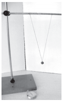
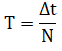
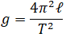
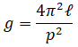
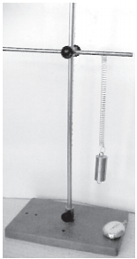
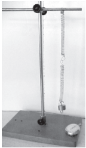
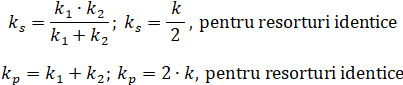

Lucrări de laborator
Pendulul gravitațional

Veți determina perioada de oscilație a unui pendul bifilar utilizând relația:
 Pentru aceasta veți cronometra intervalul de timp Δt necesar
efectuării unui număr N de oscilații complete. Pendulul gravitațional oscilează în condiții de izocronism (amplitudine unghiulară mică) cu perioada T.
Dacă în această
relație se cunosc valorile determinate ale perioadei de oscilație, T, și respectiv ale lungimii firului, 𝓁, atunci se poate calcula valoarea
accelerației gravitaționale a locului:
 Materiale necesare
sunt: pendulul bifilar, un stativ cu suport și un cronometru.
Deviați pendulul din poziția verticală de echilibru astfel încât să nu aibă amplitudine unghiulară mai
mare de 10-15°. Din punct de vedere strict matematic ar trebui să ne limităm la 5° pentru a fi valabilă aproximația unghiurilor mici, dar extinderea propusă până la 15° nu afectează
considerabil rezultatul obținut și ușurează numărarea oscilațiilor complete ale pendulului.
Cronometrați de fiecare dată un număr de 10-20 de oscilații complete.
Introduceți datele într-un tabel de forma indicată în continuare, calculați valoarea medie a perioadei pendulului, erorile absolute și relative înregistrate. Calculați apoi valoarea
accelerației gravitaționale a locului unde a oscilat pendulul.
| 𝓁(m) | Δt(s) | N | T(s) | Tmed(s) | g(m/s2) | gmed(m/s2) |
| . | . | . | . | . | . | . |
Reluați experimentul pentru diferite lungimi ale firului și calculați valorile obținute pentru perioadele de oscilație. Reprezentați grafic perioada T ca funcție de √𝓁 și calculați panta dreptei obținute (p = tgα). Calculați apoi valoarea accelerației gravitaționale din relația:
Comparați rezultatele obținute și utilizați o foaie de calcul tabelar pentru a realiza tabelul de date experimentale.
Pendulul elastic

Veți determina constanta elastică a unui resort prin metoda dinamică, apoi veți verifica experimental formula de calcul a constantei elastice a resorturilor cuplate serie sau paralel. Pendulul elastic oscilează în plan vertical cu o perioadă:
unde Δt este timpul necesar efectuării unui număr N de oscilații complete.
Perioada se poate calcula și din relația:

unde m este masa corpului, iar k este constanta elastică a resortului.
Determinând perioada pendulului cu prima relație, veți putea calcula constanta elastică a resortului din relația:
Pentru cuplajele de resorturi identice veți calcula perioadele de oscilație cu primele două relații. În a doua relație se va utiliza pentru cuplaj serie constanta:
  Materialele necesare sunt: un postament cu tijă și mufe, două resorturi identice, un corp metalic cu cârlig, un cronometru și o bară metalică etalonată (pârghie din
trusă). Realizați montajele experimentale din imagini, scoateți corpul de masă m din poziția de echilibru și cronometrați un anumit număr de oscilații.
Înregistrați
datele în tabel și calculați perioada de oscilație în cele trei cazuri cu prima formulă.
Aplicați a treia formula pentru calculul constantei elastice în versiunea
experimentală kexp.
Aplicați relațiile de la cuplajele serie și paralel pentru calculul teoretic al acelorași constante elastice kteor și
comparați rezultatele obținute.
Efectuați 10-12 măsurători pentru fiecare caz.
| Cuplajul | N | Δt(s) | T(s) | kexp(N/m) | kteor(N/m) |
| . | . | . | . | . | . |
Identificați sursele de erori și propuneți soluții pentru micșorarea lor și utilizați o foaie de calcul tabelar pentru a realiza tabelul de date experimentale.